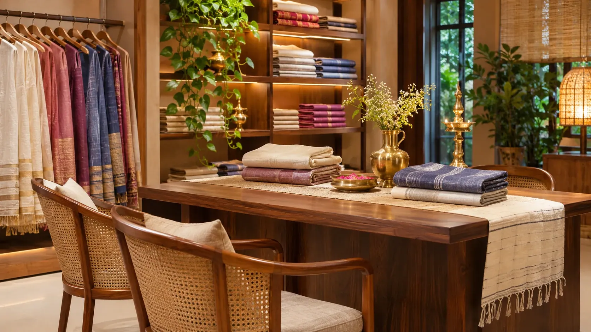

Fabric and use
Share whether you are choosing apparel, a stole, a saree or an interior textile.
Need help comparing textures, understanding fabric length, or planning a textile enquiry? Use the form to prepare the details.

Fields marked are required. Please enter accurate contact information for this demo enquiry.
For thoughtful selection, share the fabric’s intended use, preferred material, required dimensions, color palette and care expectations.
NOOLMAYAM concept location is presented here as a showroom point in Coimbatore, helping visitors understand the map placement and enquiry context.
Map display is for frontend presentation and can be replaced with the exact business address once confirmed.
For a useful textile enquiry, mention the product reference and how you plan to use the fabric.
Share whether you are choosing apparel, a stole, a saree or an interior textile.
Specify the length, width or number of pieces you have in mind.
Ask for verified composition, dye/care guidance and close-up fabric photography.